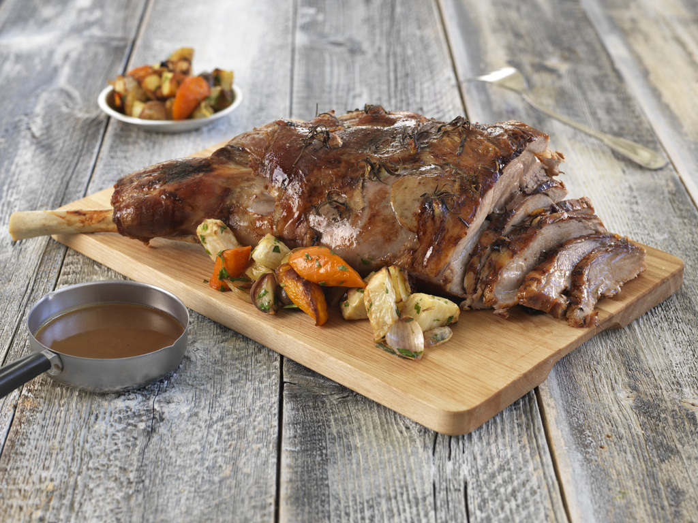

Langtidsstekt lammelår
Langtidsstekt lammelår er en klassisk norsk påskematrett som
forbindes med samvær, tradisjon og høytid. Retten består av lammelår
som stekes sakte i ovnen over flere timer for å få kjøttet mørt,
saftig og smakfullt. Den tilberedes ofte med hvitløk, rosmarin og
grønnsaker, og serveres med poteter og brun saus. Langsom steking
fremhever lammets naturlige smak og gjør det til et festmåltid.
Historie og tradisjoner
Lammelår har lenge vært en del av norsk påsketradisjon, både som et
symbol på vår og som en påminnelse om det kristne påskebudskapet. I
mange norske hjem samles familien rundt bordet for å nyte et godt
lammemåltid etter en dag i kirken eller på fjellet. Retten markerer
avslutningen på fastetiden og innleder en høytid fylt med fellesskap
og glede.
Oppskrift på Mammas langtidsstekte lammelår
Du trenger:
- God tid
- 1 stk lammelår
- 1–2 gulrøtter
- 1 løk / et godt stykke purreløk
- Olivenolje
- 2–3 ss rosmarin
- 1–2 hele hvitløk
- Salt og pepper
- En XL stekepose
- 3–4 dl eplejus / vin
Tilbehør:
- Poteter og grønnsaker etter eget ønske
- Peppermyntegele
